地政学
マイアミは米国本土の南端で、カリブ海とラテンアメリカへ開く港、空港、金融、移民政治の結節点です。キューバ、ハイチ、ベネズエラ、中米との距離が、選挙、領事業務、災害支援、スペイン語報道を日常の課題にします。

🇺🇸 アメリカ合衆国 / 北米 / World City Atlas
湾岸、カリブ海とラテンアメリカへの玄関、金融と不動産、港湾観光、キューバ文化、移民政治、気候リスクが重なる米国南東部の都市です。
都市の骨格
マイアミはビスケーン湾、港、空港、島状の低地、移民コミュニティ、金融と観光の資本が近距離で重なる、米州の南向きの都市です。
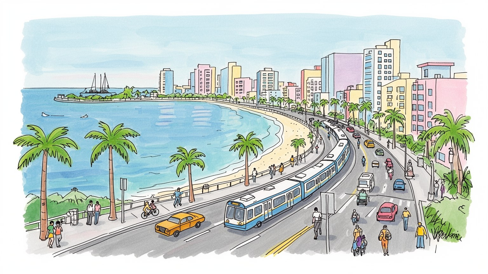
マイアミは米国本土の南端で、カリブ海とラテンアメリカへ開く港、空港、金融、移民政治の結節点です。キューバ、ハイチ、ベネズエラ、中米との距離が、選挙、領事業務、災害支援、スペイン語報道を日常の課題にします。
銀行、不動産、建設、港湾、観光、医療、航空物流、メディアが雇用を作ります。ホテル清掃、厨房、配達、介護、警備、路上商い、市場や売店の仕事が高層投資を下支えし、家賃と賃金の差を毎日強く感じさせます。
キューバ系、カリブ系、ハイチ系、ユダヤ系の文化が、料理、教会、サンテリア、ラジオ、祭りで街を形づくります。サルサやレゲトン、球場とアリーナの歓声が、英語、スペイン語、クレオール語の暮らしを結びます。
サウスビーチ、リトルハバナ、ウィンウッド、ベイサイド、モールは旅を誘います。一方で子どもの通学、高齢者の避難、保険料、暑さ、冠水は重い負担です。潮の匂い、排気、低音が華やかな余暇と生活不安を近づけます。
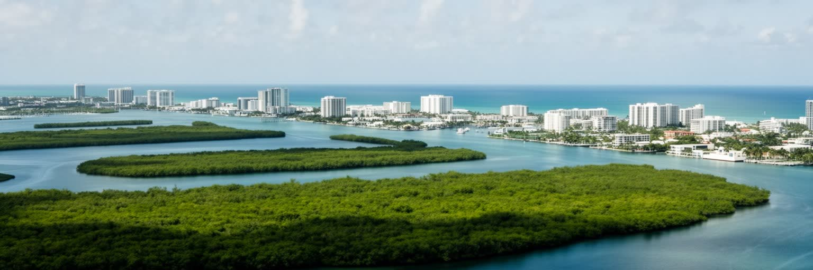
マイアミは、ビスケーン湾、大西洋の砂州、エバーグレーズへ続く低湿地、運河、埋立地、高速道路が作る都市です。地図上では明るい海岸都市に見えますが、標高の低さ、石灰岩質の地盤、地下水の高さは、排水、建設、保険、住宅価格、避難計画を常に左右しています。マイアミビーチやキー・ビスケーンの島状の市街地は観光の象徴であり、同時に高潮と海面上昇にさらされる前線でもあります。都心のブリッケルやダウンタウンでは高層住宅と金融オフィスが湾を見下ろし、西側へ行くほど郊外住宅、倉庫、移民地区、湿地の境界が現れます。水辺への近さは景観価値を高めるが、誰が安全な建物に住み、誰が排水の悪い低地に残るかという不平等も生みます。運河と道路は都市を広げたが、歩きやすさや公共交通を弱め、自動車依存を強めてきました。マイアミを読む時、海は背景ではなく、都市の資産、危険、産業、観光、記憶を同時に動かす条件です。晴れた日の湾岸の美しさと、豪雨の午後に道路が冠水する脆さは同じ地形から来ています。水をどう受け止め、どこに住まいを認め、どこを守るのかが、都市の未来を決めます。さらに塩水の侵入は飲料水の水源にも関わり、街路樹、駐車場、地下設備の管理を難しくします。住民が日々通る橋や堤防、排水ポンプは、観光写真には映りにくいが都市の生命線であり保守費も重いです。
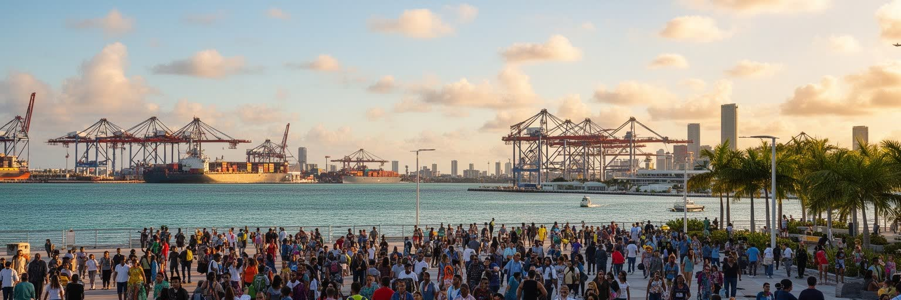
マイアミの国際性は、観光客の多さだけでは説明できません。空港は中南米、カリブ海、欧州、米国内を結び、港はクルーズと貨物の拠点になり、銀行、法律事務所、メディア、医療、大学、物流企業がスペイン語圏やカリブ諸国との取引を支えます。多くの企業にとって、マイアミは米国市場にいながらラテンアメリカを扱うための拠点であり、政治危機、通貨不安、災害、移民、送金、親族ネットワークが経済活動と結びつきます。ベネズエラ、コロンビア、アルゼンチン、ブラジル、メキシコ、中米、カリブ諸島から来た資本と人びとは、住宅市場、学校、教会、キューバ系ラジオ、レストラン、投票行動に影響を与えます。これは豊かな国際都市の顔であると同時に、国外の危機を受け止める都市の緊張でもあります。政治亡命者、留学生、富裕層、季節労働者、難民、観光客が同じ空港を通りますが、滞在資格や資産によって都市で得られる安全は大きく違います。マイアミは北米の南端というより、米州全体の会話が集まる場所です。外交は首都ワシントンだけでなく、家族の送金、ラジオのニュース、SNS、街頭デモ、領事館、航空便の本数を通じて、ここでも日常化しています。国際学校、バイリンガルな職場、越境する医療利用、親族訪問の航空路線は、都市を一つの国の内側に閉じ込めません。米国の制度とラテンアメリカの記憶が重なるため、マイアミの意思決定は常に外部の危機に反応します。
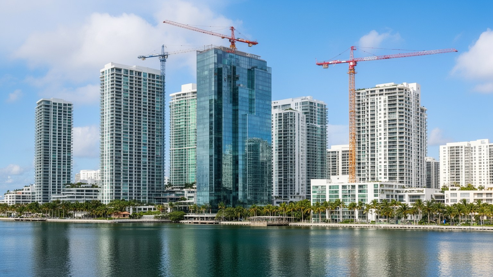
マイアミのスカイラインは、金融と不動産が都市をどれほど変えるかをよく示しています。ブリッケルやダウンタウンには銀行、投資会社、法律事務所、会計、保険、テック企業、富裕層向けサービスが集まり、湾岸の高層住宅やホテルは国内外の資本を引き寄せてきました。ラテンアメリカの政治不安やインフレから資産を移す投資、米国内の富裕層移住、リモートワーク、観光需要は、マンション価格と家賃を押し上げます。高級物件は税収と建設雇用を生みますが、住宅が投資商品になりすぎると、教師、看護師、清掃員、飲食店員、港湾労働者が職場の近くに住めなくなります。建設現場には移民労働が多く、暑さ、労災、賃金未払いの問題もあります。不動産開発は古い地区の価値を高める一方、黒人地区、ラテン系地区、ハイチ系地区の住民を押し出す圧力にもなります。海面上昇で内陸の高い土地が注目されると、従来は安価だった地区に新しい投資が入り、気候変動によるジェントリフィケーションが起こります。マイアミの繁栄は、湾を望む眺望と金融サービスだけでなく、住まいを都市の権利として守れるかにかかっています。高層ビルの明かりは経済力を見せますが、その足元で通勤時間と家賃に追われる人びとの生活も同じ都市の現実です。空室の投資物件が増える一方で、家族向けの手頃な賃貸が不足すれば、学校や病院の人材確保にも影響が出ます。都市の成長は、働く人が近くに暮らせるかで試されます。
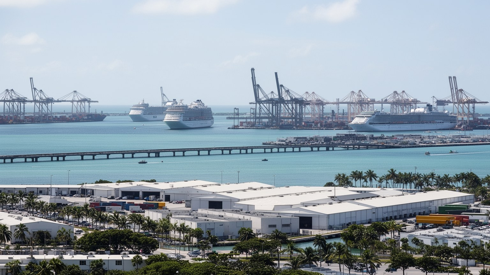
マイアミ港は、巨大なクルーズ船が並ぶ観光の入口であると同時に、カリブ海、ラテンアメリカ、米国内の消費をつなぐ物流拠点です。旅行者は港を休暇の始まりとして見ますが、背後では荷役、通関、冷蔵倉庫、トラック輸送、船舶保守、警備、清掃、食材供給、廃棄物処理が休みなく動きます。クルーズ産業はホテル、空港、タクシー、飲食、小売、観光施設へ大きな需要を生む一方、低賃金労働、環境負荷、感染症対策、港湾周辺の交通混雑を抱えます。貨物港としては衣料、食品、医薬品、建材、電子機器などが出入りし、空港貨物と組み合わさって国際物流の速度を作ります。港の拡張や橋、トンネル、浚渫は経済競争力を高めますが、湾の水質、サンゴ礁、沿岸生態系への影響も問われます。マイアミの港湾は、青い海のイメージと重い産業インフラが同じ場所にあることを教えます。豪華な船室で休暇を過ごす人、船内で長時間働く人、早朝に荷物を運ぶ人、港湾道路の近くで暮らす人は、同じクルーズ経済に違う形で関わっています。観光都市の便利さは、港を支える見えにくい労働と環境管理の上に成立しています。港を見ることは、華やかな水辺の裏側にある都市の作業場を見ることでもあります。ハリケーン後の物資搬入や避難船の運用にも港の機能は重要で、平時の効率だけでなく災害時の復元力が問われます。水辺の余暇と非常時の生命線が同じ岸壁に重なっています。
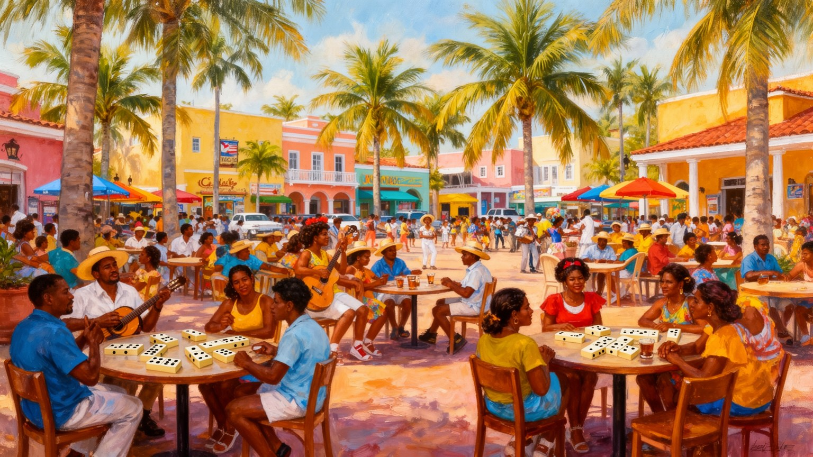
マイアミを理解するうえで、キューバ系コミュニティの存在は欠かせません。革命後に亡命した人びと、家族の再会を求めた移民、政治的理由や経済的理由で海を渡った世代が、リトルハバナを中心に商店、カフェ、新聞、ラジオ、教会、音楽、政治団体を作り、都市の言葉と公共文化を変えてきました。スペイン語は日常の言語であり、カフェシートの甘い香り、キューバサンド、クロケタ、ドミノ公園、サルサやソンの音楽が街路に残ります。ハイチ料理やカリブの屋台、ニカラグアやベネズエラの食堂も加わり、昼食の列そのものが移民地図になります。文化は観光用の明るい看板だけでなく、祖国を失った痛み、反共政治、家族分断、送金、世代間の価値観の違いを含みます。若い世代は亡命の記憶を受け継ぎつつ、学校、スポーツ、音楽、住宅、気候の話題へ関心を広げています。夕方の公園では子どもが野球やサッカーをし、高齢者は日陰でラジオニュースを聞き、家族は週末の市場で食材を選びます。祝祭の日には太鼓と旗も増え、夜の店先ではラテン音楽が通りへ漏れます。リトルハバナは固定された民族博物館ではなく、賃料上昇や観光化、新しい中南米移民の流入によって変化する生きた地区です。街角の会話には、海の向こうの国家と、この街での生活が同時に入っています。葬儀、野球観戦、親族への荷物発送も、キューバ系住民の都市経験を支える場所です。
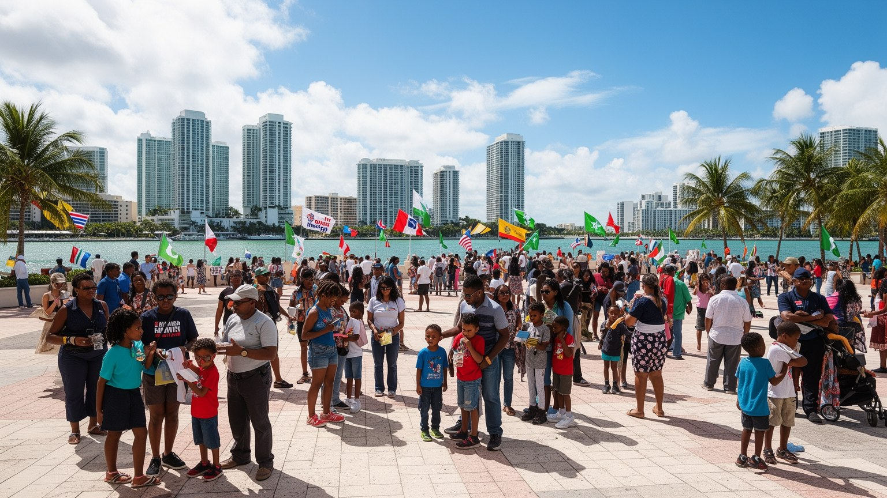
マイアミの政治は、移民の歴史と切り離せません。キューバ系に加え、ハイチ系、ニカラグア系、ベネズエラ系、コロンビア系、ドミニカ系、ジャマイカ系、プエルトリコ系など、多くの住民が祖国の危機、経済、家族、宗教、言語を抱えて暮らしています。市内と郊外には領事館、移民弁護士、送金サービス、スペイン語とクレオール語のテレビ、ラジオ、新聞、教会、支援団体が集まり、政治ニュースは家庭や店先に届きます。移民政策、亡命、国境管理、対キューバ制裁、対ベネズエラ政策、ハイチ支援、ハリケーン後の救援は、遠い外交問題ではなく、近所の家族に直接関わる争点です。学校では英語学習、進学相談、家族の滞在資格への不安が子どもの毎日に重なります。大学やコミュニティカレッジは、医療、ビジネス、メディア、観光の人材を育て、移民二世の上昇経路にもなります。投票行動は出身国の政治経験、世代、宗教、ビジネス、メディア環境によって複雑に分かれます。候補者の集会、教会の掲示、ラジオの討論、家族の通信アプリが世論を運び、噂や偽情報への警戒も必要です。移民は都市を受け入れられるだけの存在ではなく、商店を開き、税を払い、選挙を動かし、災害時には互いを支える主体です。投票所、送金窓口、礼拝堂、学校、市場、食堂が近いことも、この街の政治感覚を形づくります。
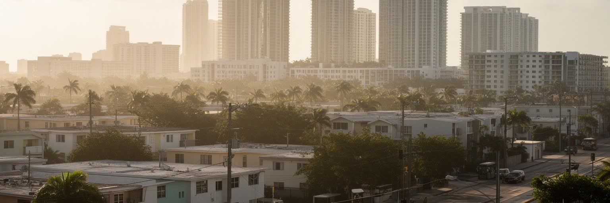
マイアミの暮らしを語る時、住宅費と格差は重要です。湾岸の高層住宅、マイアミビーチの観光地、ブリッケルの高級賃貸、内陸の古い住宅地、ハイチ系や黒人コミュニティの地区は、短い距離で大きく違う生活条件を持ちます。観光、国際資本、移住人気、短期賃貸、保険料の上昇は、家賃と住宅価格を押し上げ、サービス業や公共部門で働く人びとを遠い郊外へ追いやります。通勤時間が伸びれば、子どもの通学、放課後のスポーツ、高齢者の通院、介護、買い物に使える時間は減ります。ベイサイド、リトルハバナの小店、ウィンウッドの飲食店、大型ショッピングモールは消費の顔を見せますが、その裏には清掃、棚出し、屋台、駐車場管理、配達の労働があります。路上の果物売り、ビーチ用品の露店、フードトラックは生活の柔らかい入口ですが、許可、警備、家賃上昇に揺れます。買い物袋、焼いた肉の匂い、排気が歩道で混ざります。歴史的な黒人地区や移民地区では、再開発と気候リスクへの投資が立ち退き圧力になります。住宅問題は建物の数だけでは解けず、賃金、交通、学校、保険、災害対策、テナント保護を組み合わせる必要があります。家族が複数世代で住む家、車で通う郊外の賃貸、老朽化した集合住宅は、統計には見えにくい生活の調整を抱えます。安定した住まいは、学校の継続と地域の信頼を守る基盤でもあります。
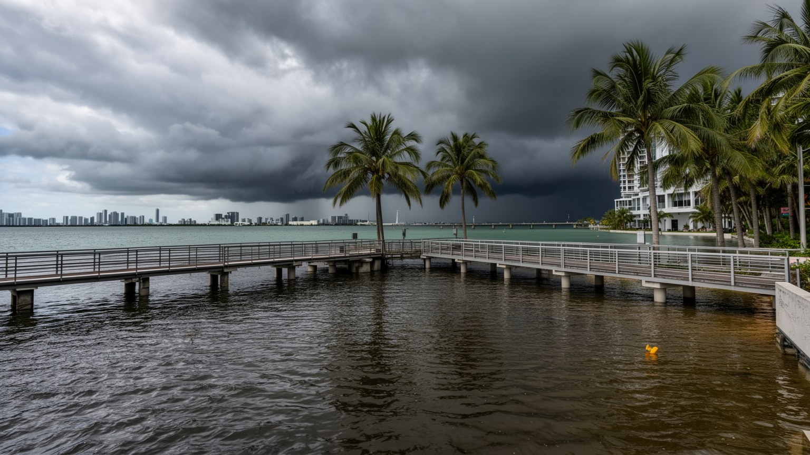
マイアミは、気候変動を抽象的な将来問題ではなく、道路、住宅、保険、税収、観光、飲料水に直接響く課題として経験しています。海面上昇、キングタイド、ハリケーン、豪雨、暑熱、地下水位の上昇は、低い土地と多孔質の石灰岩地盤を持つ都市にとって深刻です。護岸を高くし、ポンプを置き、道路をかさ上げしても、水は地下から入り、排水や下水、建物の基礎に影響します。気候対策は高価で、富裕な沿岸地区ほど早く守られ、低所得地区や借家世帯が後回しにされる危険があります。保険料の上昇は家計を圧迫し、不動産市場の評価も変えます。ハリケーン時には高齢者、障害者、車を持たない人、移民資格に不安のある人、英語が苦手な人ほど避難情報や支援に届きにくいです。暑熱も深刻で、屋外労働者、建設作業員、配達員、学校帰りの子ども、エアコン代を節約する世帯に負担が集中します。マイアミの気候対策は、観光地の景観を守る技術だけではなく、誰を優先して守るのかという社会政策です。海辺の都市としての魅力を続けるには、水を完全に排除する発想ではなく、土地利用、住宅、交通、緑地、避難、保険を含めた長期の選択が必要になります。青い空の下で進む危機だからこそ、日常の制度設計が問われます。学校の冷房、停電時の避難所、冠水時のバス運行、建設現場の休憩規則も気候政策の一部です。大きな護岸だけでなく、近所単位の備えが命を分けます。
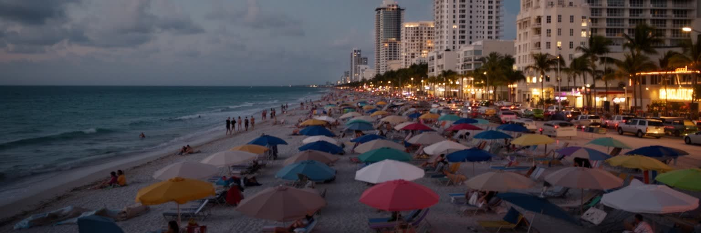
マイアミ観光は、サウスビーチ、アールデコ地区、オーシャンドライブ、ウィンウッドの壁画、ペレス美術館、リトルハバナ、ベイサイド、エバーグレーズへの日帰り旅、クラブ、レストランを組み合わせて成り立ちます。海辺ではビーチバレー、ランニング、泳ぎ、筋トレが朝から続き、夜になるとサルサ、レゲトン、ヒップホップの低音が湿った空気に混ざります。ヒート、ドルフィンズ、マーリンズ、インテル・マイアミの試合日は、アリーナ、スタジアム、スポーツバー、屋台、配車待ちの列まで都市の表情を変えます。アート・バーゼル・マイアミビーチやカーニバル系の祭りは、美術、ファッション、音楽、屋外市場を結び、ホテルと路上商いの双方に人を流します。観光は雇用と税収を生む一方、騒音、飲酒、交通渋滞、短期賃貸、警備、地域住民の生活との摩擦も抱えます。アールデコ建築の保存は観光資源であり、海辺の歴史的景観を守る取り組みでもありますが、維持費や気候リスクは大きいです。市場の客引き、土産物店の声、香辛料の匂いも観光の速度を作ります。買い物の袋が夜の歩道を揺れます。朝の清掃、移民食堂、教会、バス停、港から来る旅行者の流れまで見ると、昼の海と夜の音楽が暮らす人の条件を映すことがわかります。潮、日焼け止め、排気、揚げ物の匂いも観光都市の記憶です。
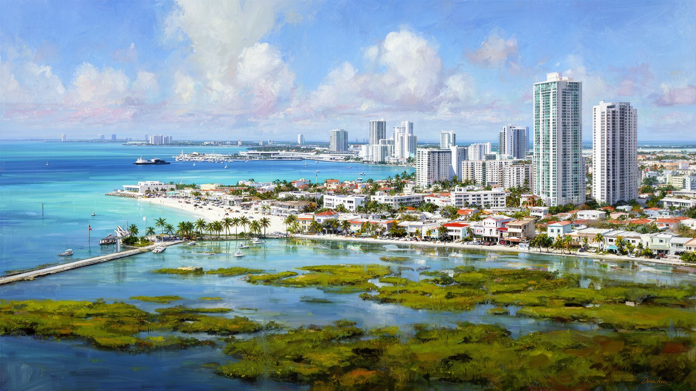
マイアミは、青い海と高層住宅の都市である前に、米州の移動、資本、記憶、気候リスクが集まる交差点です。空港、港、銀行、メディア、領事館、移民支援、家族の送金が、都市の日常を国境の外へ伸ばしています。キューバ系をはじめとする移民コミュニティは、食や音楽だけでなく、選挙、外交論争、宗教、学校、商店、市場、住宅を形づくりました。スペイン語のニュース、クレオール語の礼拝、サルサの練習場、大学の教室、子どものサッカー、高齢者の診療予約は、派手な湾岸風景の内側にある生活の層です。金融と不動産は眺望を商品化し、国際資本を集めますが、家賃高騰と気候変動による立ち退き圧力も強めます。港とクルーズは観光の華やかさを作り、同時に物流と労働の重みを隠しています。買い物客で混むモール、露店の果物、カリブ料理の湯気、夜のクラブの列、球場へ向かうシャツの色まで、消費と帰属意識は街路で見えます。マイアミの価値は、経済規模やリゾート性だけでは測れません。暑い午後の排気、突然の雨、潮の匂い、クラブの低音、球場の歓声、露店の呼び声が、都市の現実を身体に残します。海辺の快楽を可能にする移民労働、政治的記憶、水辺のインフラ、気候への備えを同じ地図に置く時、マイアミは米国の都市でありながら、米州全体の緊張を受け止める場所として見えてきます。未来は眺望の価格ではなく、移民と労働者が安全に暮らせるかにかかっています。